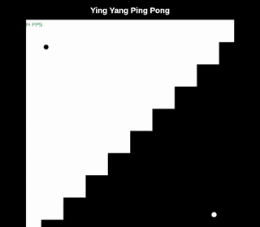
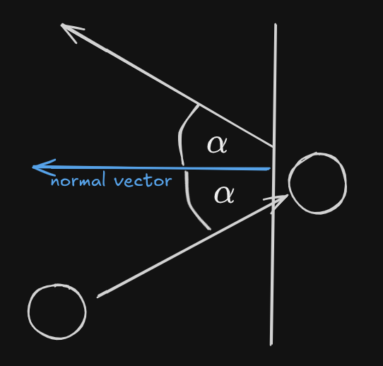

Raylib, C, Physics and WebAssembly
After seeing this Yin-Yang Ping-Pong somewhere online, I was inspired to build a similar application myself as a nice exercise. And during my last longer train ride I had the time to do just so! (I have later found out that it is in fact yin yang and not ying yang .-.)

I really enjoyed working in C and Raylib recently (Raylib really deserves its own blog post in the future) so that is what I chose. For the uninitiated, Raylib is a "simple and easy-to-use library to enjoy video games programming". It provides a framework to build graphical applications, without the hassle of using platform specific APIs or setting up a OpenGL/Vulcan Pipeline yourself. In my opinion it is somewhat comparable to SDL, but simpler and more hackable. With raylib being simple I mean it is easy to use, its feature set is still really powerful.
The main application turned out to be simpler than expected, the yin-yang grid is represented as an array of booleans. The balls are structs comprised of their position, velocity and color, which is enough to handle the physics. For the physics I started with a basic gravity acceleration, as just a continuous integration of the velocity (on the y-axis). Done, next up: Collisions. At first, I implemented the border collisions, they are rather easy, you just need to check whether a ball has left the range of your window on either axis and, if so, reflect its velocity along the normal of the border it exited. For the actual collision checks I always treat the ball as if it was a point, which simplifies the math and is barely noticeable.

A sketch showing the reflection of the balls velocity along a border
When thinking about implementing this I tried to work out a way to calculate the balls collision with the edge line between the grid cells of different colors. This approach has a few big drawbacks though, firstly getting/keeping track of the edges between the opposing cells would be a big task. This would also include handling edge cases such as isolated islands of grid cells and the ball hitting the exact corner of two edges.
So why not simplify it, I thought, I could always go back to the more complicated result if I wasn't happy with the simpler version.
My second approach was stupidly simple, just iterate over all cells and check whether they overlap with a ball of the opposing color, if so, remove the cell and reflect the ball along the axis of higher velocity. This means if the ball is going fast on its x-axis, it would be reflected along the x as the normal. While this solution isn't really an accurate simulation, it does the trick, along with being easy to implement and calculate.
So with this cool simulation being done I want to share it with people, but I don't want to force people to download, build and run a project, just for a few seconds of watching a ball bounce around. This is where the idea of WebAssembly comes into play. WASM is a way to compile programs to run in a browser, similar to JavaScript, but usually more performant.
Raylib also offers WebAssembly as a compilation backend, it is pretty straight forward and the process is well explained here). In the end your application will compile to HTML file which contains a canvas onto which a JavaScript loader will draw the output of your WASM Application.

The application itself only needed minor changes, due to the way browsers work you cannot simply put your games main loop into the standard
while(!WindowShouldClose()) as you would usually do using Raylib. Instead, you'll refactor your main loop into a separate function which can then be called by the emscripten loop handler.For compiling it all I added a
web-flag to my noob build system.With that done all that was left to do was deployin to GitHub Pages and writing this post. You can check it all out here:
GitHub
Web Version (Set the page to desktop-mode on mobile)